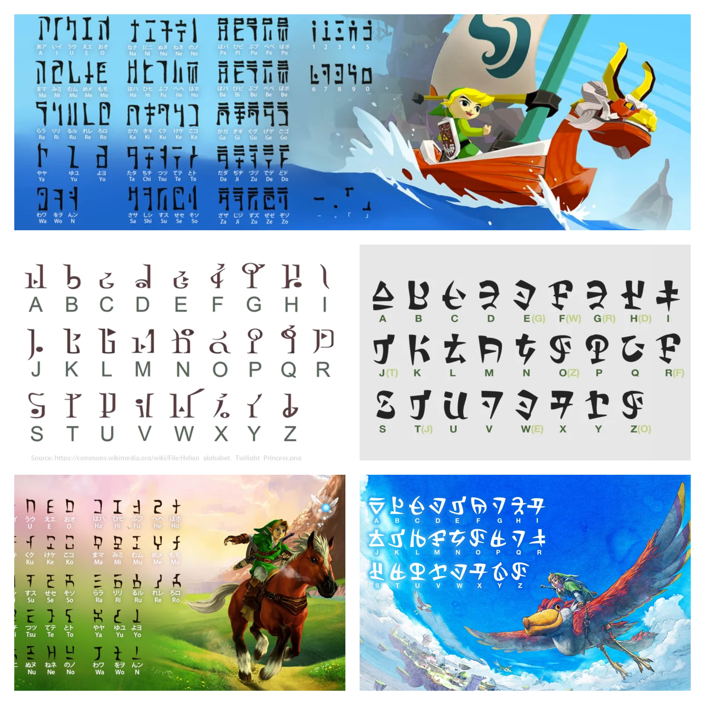
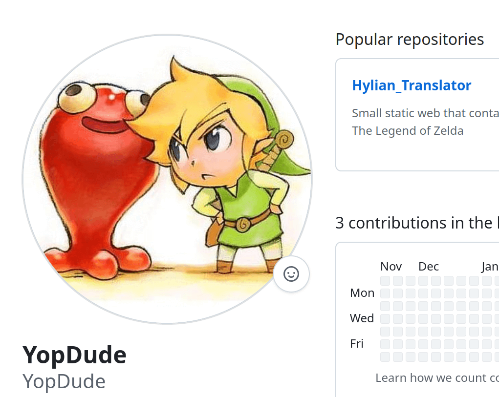
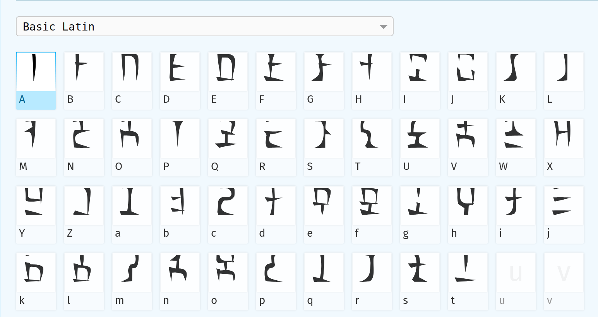
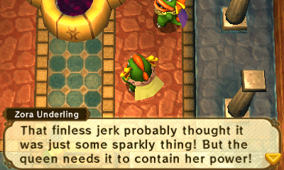

Welkom bij de Zelda Hylian Vertaler! Deze vertaler ondersteunt Engels, Japans, Chinees, Koreaans, de meeste Europese talen (Duits, Frans, Spaans, enz.) en Slavische talen (Russisch, Servisch, Oekraïens) door ze automatisch om te zetten naar de fonetische klanken die in Hylian-schrift worden gebruikt.
Lettertypen voor Japanse en Engelse invoer
b
Ocarina of Time en The Wind Waker gebruiken Hylian-schriften die volledig op het Japans zijn gebaseerd.
Alle andere lettertypen in de collectie, waaronder die van Twilight Princess, Skyward Sword en Breath of the Wild, zijn ontworpen voor het Engelse alfabet.

Downloads & bijdragen
l
Alle bestanden, lettertypen en gerelateerde middelen zijn beschikbaar om te downloaden. Je bent welkom om de repository te forken, pull requests te sturen of opmerkingen achter te laten om aan het project bij te dragen. Als je verbeteringen, suggesties of nieuwe lettertypen hebt, doe dan mee via de GitHub-repository.

Lettertypen door:
Sarinilli maakte de lettertypen voor Skyward Sword, Sheikah en Gerudo: Sarinilli’s DeviantArt
Plaguelily maakte het lettertype voor Breath of the Wild: Plaguelily’s DeviantArt
YopDude maakte het lettertype voor Ocarina of Time (3DS-remake): YopDude’s GitHub
Lettertype-aanpassingen
n
Sommige lettertypen zijn aangepast met Glyphr Studio en Font Forge; gratis en open-source lettertype-editors, om ontbrekende glyphs te repareren of Unicode-toewijzingen te verbeteren (inclusief ondersteuning voor Japans).

Aanvullende bronnen
m
Voor wie meer wil leren over Hylian, hier zijn enkele nuttige bronnen:
